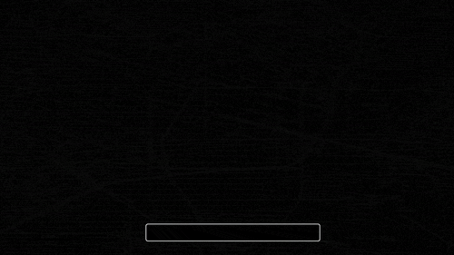

what is mass surveillance?

“Many of the programs were aimed at the American population, but dozens of countries around the planet — including democracies typically considered US allies, such as France, Brazil, India and Germany— were also targets of indiscriminate mass surveillance ” ― Glenn Greenwald
Metadata is the information about information.